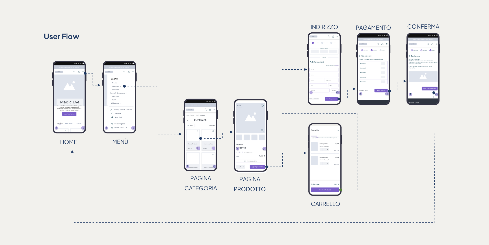

2023
The UX/UI redesign project of Nevecosmetics e-commerce was my final project during the design master's program. Throughout the project, I went through all the stages of the design process, starting from discovery to user testing.
After conducting a heuristic analysis of the website using Nielsen's framework, both on desktop and mobile versions, and assessing its accessibility and usability, I identified some significant issues. In particular, the website layout appears confusing and not fully aligned with the brand's values, making it difficult for users to understand the company's offerings. Furthermore, some information is hard to find, and the content hierarchy is not always clear, resulting in a non-intuitive and non-user-friendly website navigation.
I have simplified and redesigned the site design and redefined the purchase process to make it more fluid and intuitive. Additionally, through benchmarking research and user interviews, I discovered useful services to add to the e-commerce site, such as the ability to search for local stores, a virtual mirror, and the option to place an order without logging in.
In this case, an unmoderated test was conducted via the UsabilityHub platform on eight target users. The test included a 5-second test and a SUS questionnaire to evaluate the effectiveness of the new interface and overall usability of the e-commerce site. The prototype received a very high satisfaction score in both tests, but additional opportunities for improvement were also identified.